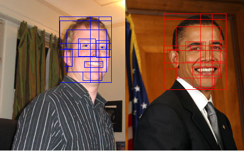
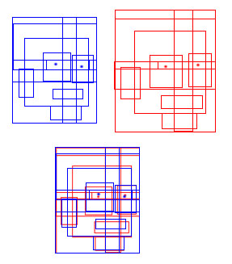

The resemblance
The resemblance is not only skin deep. We have many non-physical similarities. Barack wanted to be president. I have wanted to be president. Barack used to live in Chicago. I live in Chicago. Barack went to college. I went to college. Barack was a senator. I was a patrol leader in the boy scouts.
But then, there are many physical similarities. We're both approximately the same height, different by only a few inches. Our hair is about the same length, though he curls his hair so it's hard to tell.
Let's look at our faces. Overall, our faces are about the same. Same number of eyes, noses, ears. But let's look deeper. Let's look at the facial structure.
